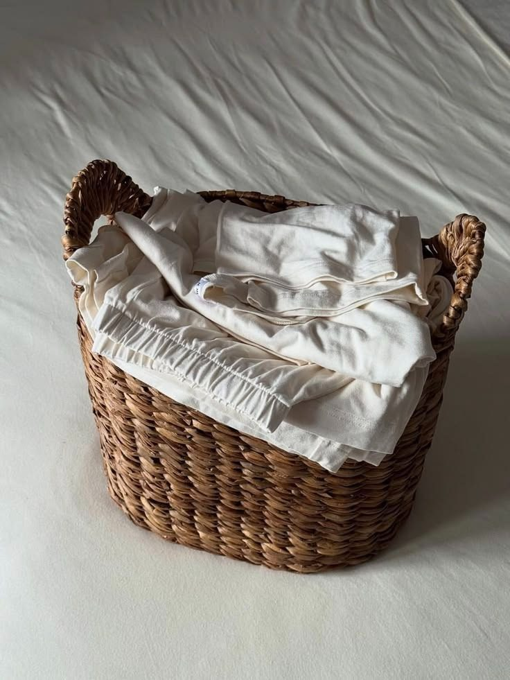
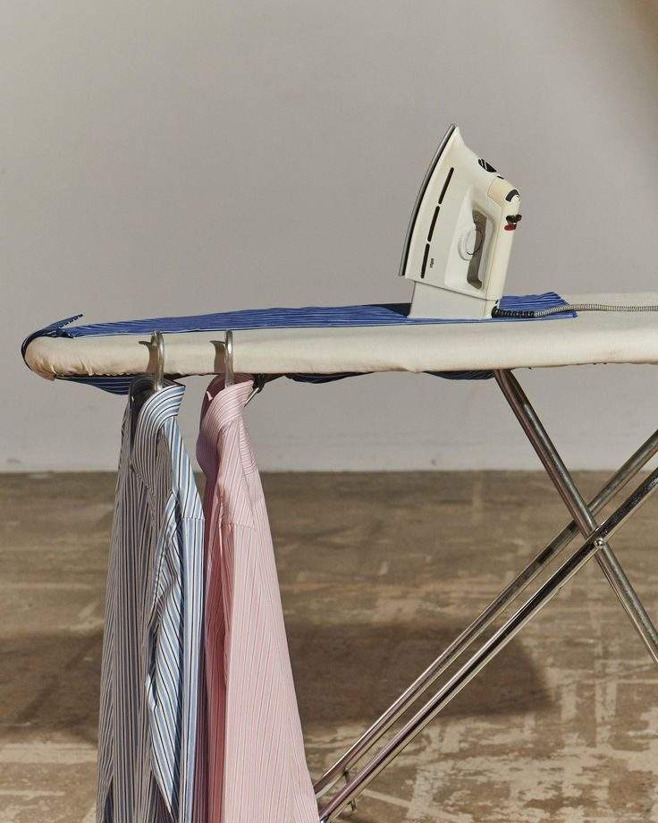
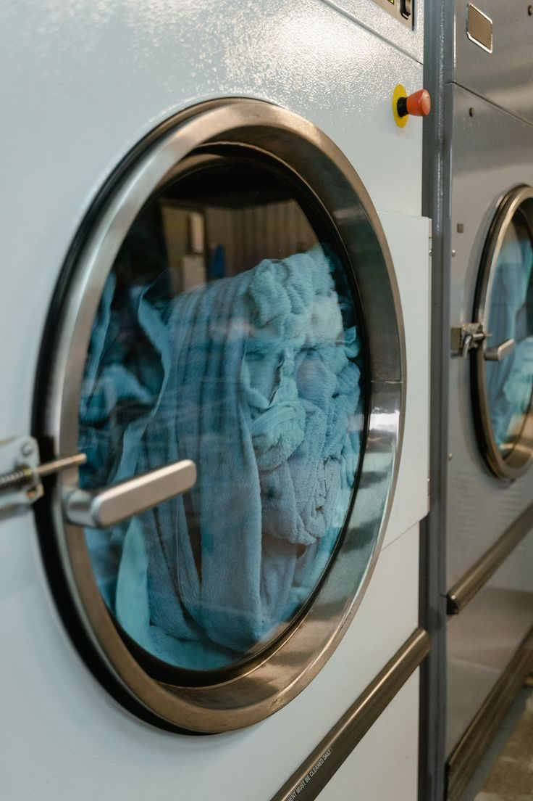
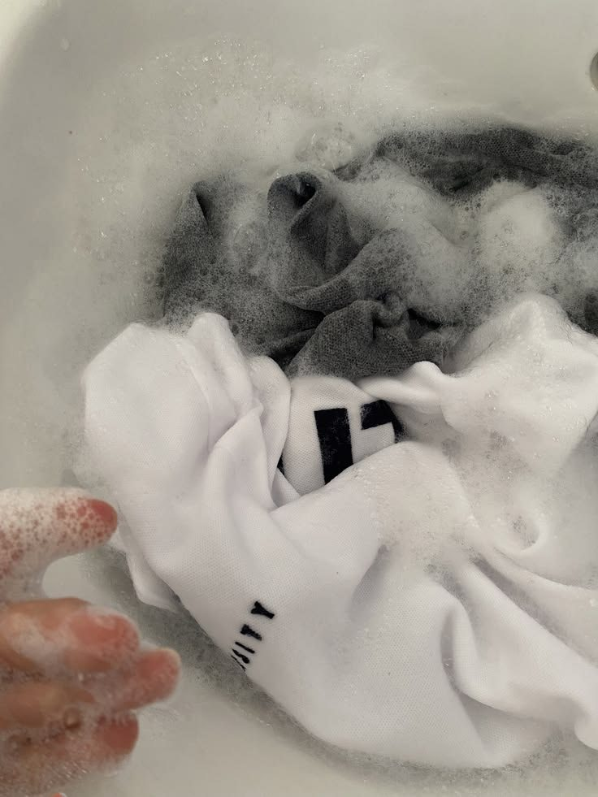
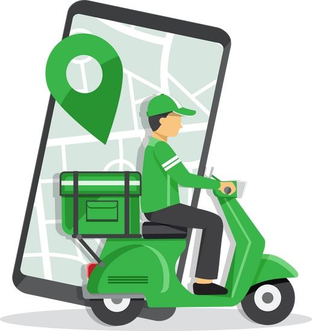
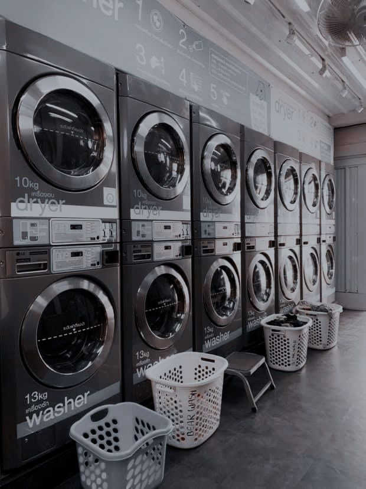

Laundry online antar-jemput di Madiun | CleanGo
Fresh Clothes, Fresh Start. Pesan dari ponsel, kurir menjemput di Madiun, dan Anda bisa melihat cucian sudah sampai tahap mana.
Layanan laundry apa saja yang tersedia?
CleanGo menyediakan laundry kiloan, cuci dan setrika, laundry express, laundry satuan, serta perawatan sepatu, selimut, dan jas. Semuanya untuk mahasiswa, pekerja, dan keluarga di Kota Madiun.

Laundry kiloan
Cuci bersih, kering, dan lipat, dihitung per kilogram. Cocok untuk pakaian harian keluarga dan kos.

Cuci dan setrika
Pakaian dicuci, disetrika rapi, lalu dikemas. Pulang dalam keadaan wangi, licin, dan siap dipakai.

Laundry express
Selesai dalam 6 jam setelah cucian ditimbang. Cocok untuk jadwal yang mepet, seperti kerja atau kuliah.

Laundry satuan
Kemeja, celana, jaket, atau selimut dicuci per potong dengan perhatian khusus pada bahannya.
Cuci sepatu
Sepatu dibersihkan per pasang. Cocok untuk sneakers, sepatu kerja, dan sepatu sekolah.
Cuci selimut dan bed cover
Selimut tebal dan bed cover dicuci per potong, sehingga tetap bersih dan nyaman dipakai.
Cuci jas dan gaun
Perawatan khusus untuk jas, gaun, dan pakaian formal agar bentuk dan warnanya tetap terjaga.
Berapa harga laundry di CleanGo?
Harga per layanan tercantum di bawah dan dapat berubah sewaktu-waktu. Harga yang berlaku selalu tampil di formulir pesanan.
Laundry kiloan
Rp7.000 / kg
Cuci, kering, lipat. 2 hari.
Cuci dan setrika
Rp9.000 / kg
Cuci, setrika, kemas. 2 hari.
Laundry express
Rp13.000 / kg
Selesai 6 jam.
Laundry satuan
Rp8.000 / pcs
Per potong: kemeja, celana, jaket.
Cuci sepatu
Rp35.000 / pcs
Sepatu dibersihkan per pasang.
Cuci selimut dan bed cover
Rp35.000 / pcs
Dicuci per potong, 2 hari.
Cuci jas dan gaun
Rp45.000 / pcs
Perawatan khusus per potong, 2 hari.
Biaya antar-jemput Rp5.000, gratis untuk pesanan di atas Rp50.000.
Bagaimana cara pesan laundry di CleanGo?
Ada empat langkah: pesan online, kurir menjemput cucian, cucian dicuci dan dirapikan, lalu diantar kembali ke rumah Anda.
Pesan online
Pilih layanan, isi berat atau jumlah, tentukan jadwal jemput.
Kurir menjemput
Kurir datang ke alamat Anda dan menimbang cucian.
Dicuci dan dirapikan
Cuci, kering, setrika, dan kemas. Status bisa dipantau.
Diantar kembali
Pakaian bersih sampai di rumah Anda.
Pertanyaan yang sering ditanyakan
Berapa lama laundry selesai?
Reguler 2 hari, express 6 jam setelah cucian ditimbang.
Bagaimana cara membayar?
Tunai saat antar, transfer bank, atau QRIS (simulasi pada versi demo).
Berapa biaya antar-jemput?
Rp5.000 per pesanan, dan gratis untuk pesanan di atas Rp50.000.
Ada promo untuk pesanan pertama?
Ya. Masukkan kode CLEANGO10 saat checkout untuk diskon 10% yang berlaku untuk semua layanan.
Terakhir diperbarui 19 November 2026.
Tanya langsung
Masih bingung? Tulis pertanyaanmu. Asisten CleanGo akan menjawab otomatis dalam 3-5 detik.
Tips seputar laundry
Pisahkan pakaian putih dan berwarna
Mencegah luntur dan membuat putih tetap cerah.
Cek saku sebelum dicuci
Tisu, uang, dan kertas bisa merusak seluruh cucian.
Baca label perawatan
Simbol di kerah menunjukkan suhu air dan cara setrika yang aman.
Di mana lokasi dan cara menghubungi CleanGo?
CleanGo melayani laundry online antar-jemput di Kota Madiun dan sekitarnya. Hubungi kami lewat WhatsApp atau Instagram, atau kunjungi lokasi kami di Jl. Pahlawan No. 03, Madiun, Jawa Timur.
Tentang Kami
CleanGo adalah layanan laundry online dengan antar-jemput di Kota Madiun, Jawa Timur, yang mulai beroperasi pada tahun 2025. Layanan ini dikelola oleh Kelompok 1.
Kami melayani laundry kiloan, laundry satuan, laundry express, dan cuci-setrika. Cucian dipisah per pesanan dan dicuci dengan mesin berkapasitas 10–13 kg.
Promo untuk pelanggan CleanGo
Hemat lebih banyak dengan kode promo berikut. Masukkan kodenya di kolom Kode promo saat memesan.
Diskon 10% pesanan pertama
Masukkan kode CLEANGO10. Berlaku untuk semua layanan.
Gratis antar-jemput
Masukkan kode ANTARGRATIS untuk membebaskan biaya antar-jemput pada pesanan apa pun.
Diskon 15% pesanan besar
Masukkan kode HEMAT15 untuk diskon 15% pada pesanan minimal Rp100.000.
Gratis antar-jemput otomatis
Tanpa kode. Pesanan di atas Rp50.000 otomatis bebas biaya antar-jemput.

Antar-jemput sampai pintu
Kurir CleanGo menjemput cucian langsung dari rumah, kos, atau kantor Anda, lalu mengantarkannya kembali setelah bersih. Anda cukup memilih tanggal dan jam jemput saat memesan.
Area layanan saat ini: Kota Madiun dan sekitarnya. Pakaian dikemas plastik bersih per pesanan, jadi tidak tercampur milik orang lain.
Pilih jadwal sendiri
Tentukan tanggal dan jam penjemputan sesuai kesibukan Anda.
Biaya jelas
Biaya antar-jemput Rp5.000 per pesanan, dan gratis untuk pesanan di atas Rp50.000.
Kurir yang jelas
Setiap pesanan ditugaskan kepada kurir CleanGo yang bertanggung jawab atas penjemputan dan pengantaran.
Pantau dari ponsel
Lihat status cucian dari dijemput, diproses, sampai siap diantar lewat menu Lacak.
Mesin dan proses yang rapi
Setiap cucian melewati enam tahap yang sama, mulai dari diterima sampai diantar kembali. Cucian dipisah per pesanan, dicuci dengan mesin berkapasitas 10–13 kg, lalu dikeringkan dan disetrika sesuai layanan yang dipilih.
Tahapan ini membuat pakaian Anda tetap bersih, tidak tercampur, dan bisa dipantau statusnya.

Terima dan catat
Cucian diterima dan dicatat sesuai pesanan, lengkap dengan layanan yang dipilih.
Timbang dan pisah
Cucian ditimbang, lalu dipisah per pesanan agar tidak tercampur.
Cuci dengan mesin
Dicuci dengan mesin berkapasitas 10–13 kg sesuai jenis bahan dan layanan.
Kering dan setrika
Dikeringkan, lalu disetrika rapi bila layanan yang dipilih termasuk setrika.
Kemas dan periksa
Pakaian dikemas dalam plastik bersih, lalu diperiksa ulang sebelum diantar.
Antar kembali
Kurir mengantarkan pakaian bersih ke alamat Anda sesuai jadwal.